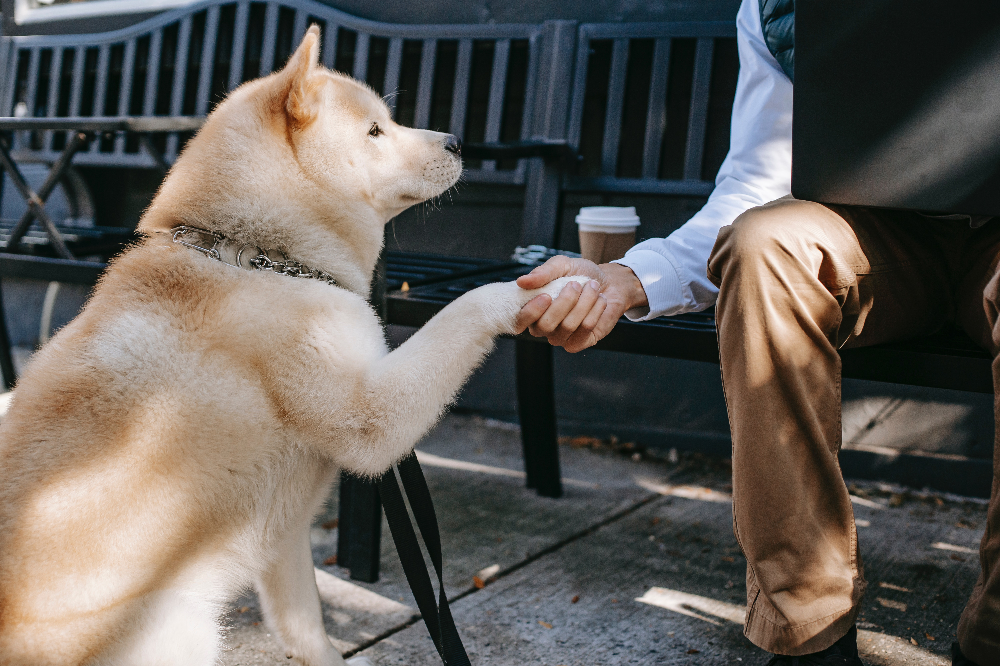

Pets need healthy food.
Just like people, pets need food that meets their specific nutritional needs. Dog foods are designed to meet a dog’s nutritional needs and cat foods are designed to meet a cat’s nutritional needs. Importantly, their dietary needs are very different. Puppies
require different food from senior dogs. Pet’s with health issues may require special diets. Table scraps are typically not good for dogs and cats because many of the foods we eat, such as salt, garlic, and onions are bad for your
pet’s health and can make them sick or even be fatal. Don’t forget to give pets the right amount of food, too! Overfeeding your pet or giving him too many treats could lead to obesity, which could consequently trigger more health problems
such as heart disease, renal problems, and more. Weigh your options when it comes to pet food to avoid these kinds of illnesses — and if you don’t exactly know what foods are best for your pet, it’s a great idea to ask the opinion
of your vet!
Give your pets 24/7 access to fresh drinking water.
Just like human beings, pets need ready access to water in order to survive. Always provide a clean, fresh bowl of water to all animals in your care. Make it accessible by placing it near their food bowl, and remember to refill your pet’s water bowl at
least two times a day. This will keep your pet cool, hydrated, and healthy. If your pet lives in water, like fish and turtles, clean aquariums at least once a week. Failing to do so could lead to smelly tanks and sick pets!
pet care includes providing a safe shelter.

Cars, aggressive dogs, and predators are an ongoing threat to cats, which is why they should be kept indoors for their own safety. Many cats enjoy having a covered bed or cocoon-like space inside where they can retreat to and feel safe. If you let your
dog out in your fenced-in yard off-leash, be sure he is wearing tags and is microchipped, and that the microchip is registered and your contact information is up-to-date. It is also a good idea to register your pet with Finding Rover.
Always provide shade and shelter, along with water. Indoors, dogs also typically enjoy having their own dog bed and older dogs, in particular, may benefit from having an orthopedic bed. Pets need protection from extreme hot and cold
temperatures and other extreme weather and shouldn’t be expected to live exclusively outside. Another concern is predators like coyotes (who tend to lurk at night but are often present in the daytime as well) that might consider your
pets as suitable prey.
Pets need to go to the bathroom regularly.

Many types of pets can be housebroken, allowing them the opportunity to roam the house without the worries of accidents. Cats should be provided at least one litter box, Puppies generally need a potty break every one to two hours during the day. A general
rule of thumb is that a puppy can hold it for as many hours as she is months old, plus one. For example, a three-month-old puppy, should have at least one bathroom break every four hours. You’ll learn the needs of your own dog but
no dog should be expected to “hold it” more than six hours. Senior dogs also need to relieve themselves more frequently, just like older people. Dogs can be taught how to use doggy doors, potty pads, or to wait for walks to relieve
themselves. No matter where your pet’s bathroom is, be sure to clean it regularly. Observing proper hygiene and sanitation will prevent dirt and bacteria from piling up and help protect your pet’s health. Your pets will greatly appreciate
having a clean area to do their business, too!
Make sure that your pet gets regular exercise.

Proper pet care also includes exercising your pet. Exercise is an important part of your pet’s mental, as well as physical, health. If you spend any time on social media, you know that all kinds of animals like to play such as this ball-playing turtle,
this dog playing fetch by himself or this bird playing with a red cup. What some people consider misbehavior in a pet is just the pet getting bored an amusing itself by getting in the garbage or tearing up the couch or…well you get
the idea. Need some suggestions on what to do with your dog? Check out The Animal Foundation’s Guide to Your Dog’s Play Time and Activities. Pets also benefit from socialization, whether that’s regular interaction with you, having
guests come over, or trips outside of the house. Expand their horizons and improve their people skills while helping them to safely experience new things!
Pets require doctor visits and healthy habits.

To ensure that your pets are healthy and nimble, you should take them to a local, trusted veterinarian for wellness check-ups at least once a year. Keeping up on your pet’s vaccinations [LINK: Cat & Dog Vaccines] is essential. Clean teeth and healthy
gums also play an important role in your pet’s health. If your furry friend is showing signs or symptoms of being sick, take them to your vet or animal hospital right away to get them feeling better sooner rather than later! Another
way to keep your pets healthy and happy is to regularly groom them (if needed). Matted fur can be painful and unhealthy for dogs. Dogs and cats may not like it, but baths, brushings, nail trims, and flea/tick removal may be necessary
for your pet’s well-being. With the above tips on proper pet care, you and your beloved pet are well on your way to a lifetime of happiness together!
.png)